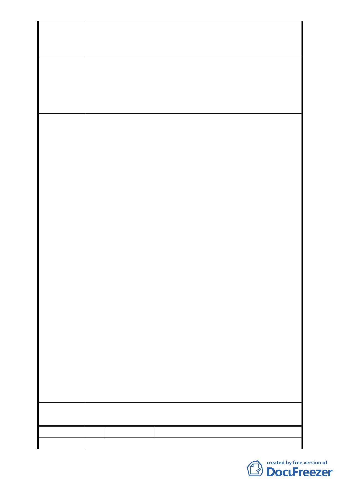

分了解與評估鄰地（本社區）合併更新之可行性下，
逕自將本設區排除於該案申請範圍外，其過程未臻完
備。
懇請貴會能暫緩審議該申請案及依「臺北市土地
及合法建築物所有權人申請自行劃定更新單元（重建
建 議 辦 法 區段）作業需知」規定，並請台北市都市更新處協調
並考量本社區迫切改建之需求，納入該申請案範圍內
併同更新改建。
1.本案更新單元劃定範圍內台灣大學管有土地
佔 95％，會中台灣大學表示該校管有土地未
來有使用計畫，不參加本更新單元之都市更
新開發；後續若由台大主導更新，更新處表
示適用之法令依據亦與本申請案不同。本更
新單元劃定範圍因公地管理機關有意見不
予通過。
2.為改善地區環境，增加開發效益並負起公有土
地之社會責任，台大未來開發不宜僅考量管
有土地，應擴大涵蓋南北兩側已表達更新意
願之土地；會上台大亦表示未來若擴大更新
99.12.3 專
案小組結
論
範圍，仍擬主導更新計畫，宜請更新處協助
依臺北市政府「都市更新單元內公有土地保
留重疊劃設處理原則」發函徵詢國有財產局
（含土地管理機關）或市府財政局主導更新
之意願。
3.全案請都市更新處彙整後提大會審議。
附帶建議：
1.達欣開發股份有限公司為促進本案都市更新
已努力協調南北兩側所有權人，並表達賡續
辦理更新之意願，建議達欣開發股份有限公
司與台灣大學協調後續擴大更新單元範圍
之開發方式，並循都市更新程序辦理。
2.本案臺灣大學管有土地建議應加強環境管理
及綠美化，善盡管理之職責。
委員會決
本更新單元劃定範圍不予通過，更新單元擴大方
議 案請另循程序辦理。
編 號 2. 陳情人 涂智堂等共 38 人
陳 情 理 由 今天我們一群地主到臺北市政府都委會參加有關
- 19 -